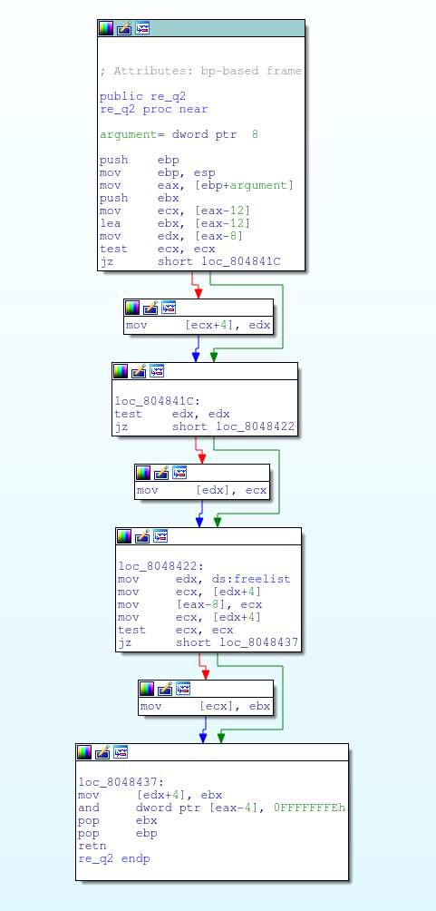

Question 1: What do the constants (13, 65) represent?
This function is well-known. It is part of a crypto algorithm. What is that algorithm called?
Question 2: No extra questions.

Question 3: What do the 3 "xor" operations do?
This function is well-known. What is it called?
Question 4: This is a tricky one: remember that "al" is the low byte of "eax", "bl" is the low byte of "ebx", and so on.
Write a comment in your reversed C code if you know *exactly* what this function does.